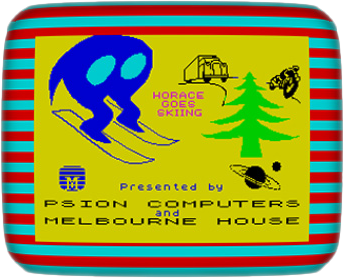

{kind=link}

The Toy Box
A hand-picked selection of the games I grew up with — the ones that defined my 80s childhood, made those hours magical, and sparked my lifelong love of the Spectrum.
The Toy Box… an old wooden box my Grandpa made for me when I was very young. I probably kept toys in it at some point, but by the time I had my Spectrum in the 80s it had a far more important job: it became the platform where my Spectrum tapes lived — including the ones I’d copied using my Dad’s hi-fi system. They would sit on top of the box, lined up and waiting to be played. I still have the Toy Box today.
I had a 48K Spectrum back then, so there are no 128K titles here. These versions were essentially the same games with little or no noticeable graphical enhancements. They did however have much better sound thanks to the AY-3-8912 chip.
I’ve tried to include as many games as I can remember, but it’s probably not complete — there are bound to be a few I’ve forgotten over the years.
Where possible, the games point to their CRASH reviews. If no CRASH review exists, I’ve sourced them from other magazines including Sinclair User and Your Sinclair.
My Memories
I had my Spectrum perched on top of an old chest of drawers — no desk, I had to use whatever space I could find. I’d pick a game from the Toy Box lid, pop the tape into the deck, type LOAD " ", and then wait the obligatory two or three minutes for the game to load, buzzing with anticipation about the wonders that were surely about to appear… only for the thing to crash with the dreaded R Tape loading error, 0:1
In those early days I only had a black-and-white TV — the same one bought for me when I had my ZX81. My parents had a portable colour TV in the dining room, and I used to pinch it at weekends. Every Sunday night my mum would shout up the stairs, “BRING THAT TV DOWN NOW!” Sometimes I did… but more often than not I “forgot.” Eventually I won the battle and it stayed in my room permanently.
Once I had the colour TV firmly secured, my grandmother — Muz, or Muzzy — would sometimes come up to me after I told her about a new game I’d bought. She’d sit there watching as I excitedly showed her how it worked. I doubt she was even remotely interested, but she pretended for my sake, just as any self-respecting grandparent would do for their grandchild.
But the whole setup lived or died by the tape deck — and ours had a mind of its own. I had endless trouble with the first one and even took it back to Boots to get it replaced. Looking back, it was probably fine — just the usual Spectrum tape-loading foolishness. Not long after I got my Spectrum, I visited my cousin Justin (who also had one) so he could show me the ropes. I remember him loading up some of his games — one was River Rescue, which I still love to this day.
Friends and family often got pulled into the fun too. I remember my cousins Grant and Damien staying with us once, and Grant became completely absorbed in The Wild Bunch. He sat there for ages trying to work out who the culprit was, making detailed notes in an attempt to beat the game. Years later I told him this story… and he had absolutely no memory of it.
One thing that amazed me as a kid was when games included in-game speech. Usually it was on the title screen or after completing a level. I remember Ghostbusters, Robin of the Wood, and Splat! having speech, and I listened in total amazement, convinced it had to be some kind of sorcery. What devilment was involved here? Was it clever use of the BEEP command? Early sampling? Witchcraft? Who knows — but it felt magical.
And then there was CRASH — my magazine of choice for all things Speccy. Every month I’d head to W.H. Smiths, walking excitedly to the magazine stand, hoping — praying — that this month’s issue had arrived. And when it was there… that rush of excitement was unreal. It felt like finding long-lost treasure.
The very first thing I’d do was flip straight to the POKES section to see if any of my games were featured. If one was, that was it — I’d clutch the mag like sacred scripture and hurry home to try it out. Of course, more often than not it didn’t work… but for that brief, glorious moment, hope was alive.
As for the games themselves, the ones I played most were Daley Thompson's Decathlon, River Rescue, Jet Set Willy, Manic Miner, Splat!, Alien 8, Knight Lore, Underwurlde, Wheelie and 3D Deathchase. Many of these came from school friends, borrowed for a weekend and copied onto blank cassette tapes. I still remember my school friend Michael Plumsted copying Alien 8 for me — a treasured addition to my little collection at the time.
Some memories I seem to remember with more fondness than others. One morning before school I had a dentist appointment, and I vividly remember loading up 3D Deathchase for a quick blast beforehand — presumably to distract myself from the horrors waiting for me in the dentist’s chair. It worked… at least until the anaesthetic wore off.